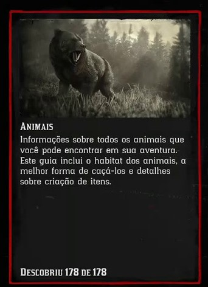
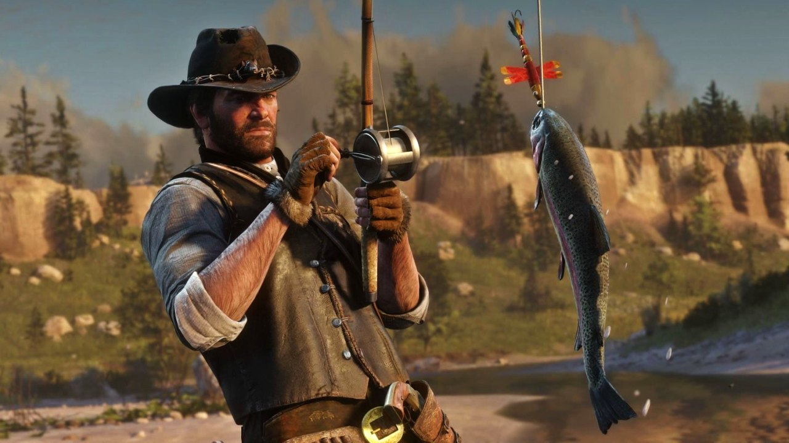

No final do século XIX, houve um aumento nas lutas pelos direitos das mulheres nos Estados Unidos. Movimentos sufragistas começaram a ganhar força, buscando o direito de voto para as mulheres. Além disso, as mulheres estavam desafiando as normas tradicionais de gênero, buscando educação e participação em áreas além do domínio doméstico. No jogo você pode encontrar personagens femininas que, de maneiras diferentes, desafiam as expectativas sociais da época. Isso pode incluir personagens envolvidas em atividades consideradas não convencionais para mulheres daquela era.
- Cadastro
- Login
- Sobre mim

O jogo ocorre durante um período em que os Estados Unidos estavam passando por uma transição significativa da economia agrária para a industrial. Isso é evidenciado por fatores como a presença de ferrovias, fábricas e outras manifestações do progresso tecnológico. A industrialização trouxe consigo urbanização, crescimento das cidades e uma mudança nas formas de trabalho.


O jogo se destaca pela impressionante quantidade de 178 espécies de animais terrestres, cada uma apresentando características únicas e intrincadas em seu habitat. Essa vasta diversidade não apenas enriquece o cenário do jogo, mas também contribui para uma experiência imersiva em que a vida selvagem desempenha um papel fundamental na complexidade do ambiente virtual.
Cada animal é meticulosamente projetado para ter seu próprio habitat específico, refletindo as características naturais do mundo real. Dos vastos campos às densas florestas e montanhas imponentes, cada região abriga uma variedade única de espécies adaptadas ao seu ambiente. Esse nível de detalhe não apenas proporciona um pano de fundo visualmente deslumbrante.


No final do século XIX. Em uma época em que os recursos naturais eram vitais para a subsistência, a prática da pesca não apenas representava uma habilidade essencial, mas também refletia a interdependência entre as comunidades e o ambiente ao seu redor. A representação da pesca no jogo não apenas entretém, mas também destaca aspectos fundamentais da relação histórica entre os habitantes do Velho Oeste e os recursos naturais que moldaram suas vidas.
A mecânica de pesca destaca-se pela rica variedade de peixes disponíveis nos corpos d'água do vasto Velho Oeste virtual. Desde lagos serenos até rios correntes, cada local oferece oportunidades únicas de captura. Os jogadores podem se deparar com uma gama diversificada de espécies, desde os comuns e abundantes até os lendários e desafiadores de encontrar.
Contendo 30 espécies de peixes diferentes.